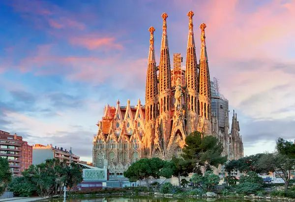
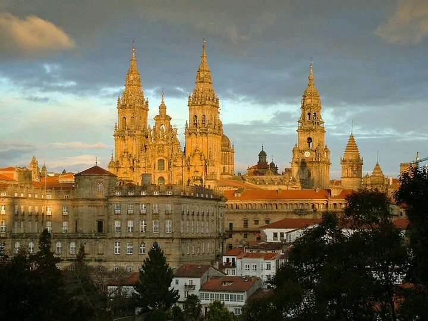
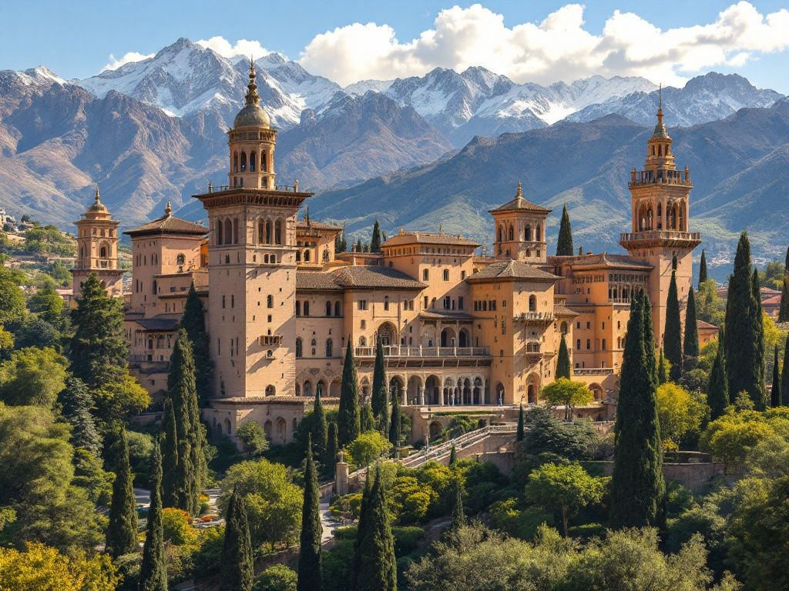

Madrid - la capital de España

Barcelona - la ciudad de Gaudí

Sevilla - el corazón de Andalucía

Santiago de Compostela
| Главная страница | Регионы | Галерея | Формы | Паспорт | Задача | Википедия |
Этот сайт посвящен Испании — стране солнца, фламенко и великой архитектуры. Здесь вы найдете информацию о городах, автономных областях и известных личностях, а также сможете посмотреть фотографии.
Испания — это страна с богатой историей. Здесь встречаются римское наследие, мавританские дворцы, готические соборы и смелые постройки Антонио Гауди.
|
Madrid - la capital de España |
 Barcelona - la ciudad de Gaudí |
Sevilla - el corazón de Andalucía |
 Santiago de Compostela |
|
El Palacio de la Alhambra, Granada:  Наследие мавританской эпохи |
История ИспанииEl imperio romanoРимляне называли Пиренейский полуостров Испанией (Hispania). Они построили здесь дороги, акведуки и театры, а латынь стала основой современного испанского языка. Saber más sobre la historia de España |
La ReconquistaХристианские королевства отвоевывали земли у мавров много веков. Реконкиста завершилась в 1492 году падением Гранады. В том же году экспедиция Колумба, снаряженная католическими монархами, отправилась в путь. |
Vamos a celebrar la victoria de la Furia Roja!
(Нажми, чтобы увеличить)


К началу страницы